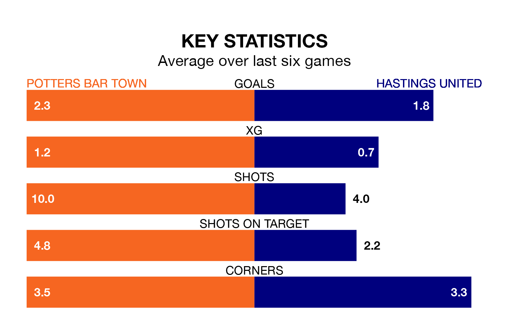

Potters Bar Town host Hastings United on Saturday at the Pakex Stadium in the Isthmian Premier Division.
In their last league match, on February 6, Potters Bar drew with Carshalton Athletic 1-1 at home.
Hastings lost, 3-1 at home against Lewes on February 10.
With 54 goals in 30 games so far this season, Hastings are scoring more than average in the league with 1.8 goals per game. And they are conceding fewer than average, letting in 42 goals at a rate of 1.4 per game.
Potters Bar, meanwhile, are below average scorers, with 1.5 goals per game, compared to a league average of 1.6. They have conceded 1.7 goals per game.
United are fifth in the table after 30 games, of which they have won 14 and drawn six, earning 48 points.
Town are nine places behind the away team in 14th, with nine wins and seven draws putting them on 34 points.
In the last three years, Potters Bar and Hastings have played each other on three occasions. Potters Bar won two of them and Hastings one.
Their last meeting was on September 23, when Potters Bar won 1-0 away.
The hosts are in mixed form in the Isthmian Premier Division, with three wins and a draw from their last six games.
With three wins and three losses over that period, Hastings's form is slightly worse – they have taken nine points from 18, compared to Potters Bar's 10.
Updated: 13:04 (UTC), 16/02/24